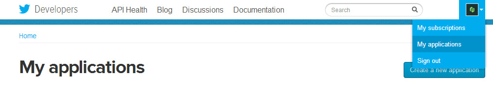
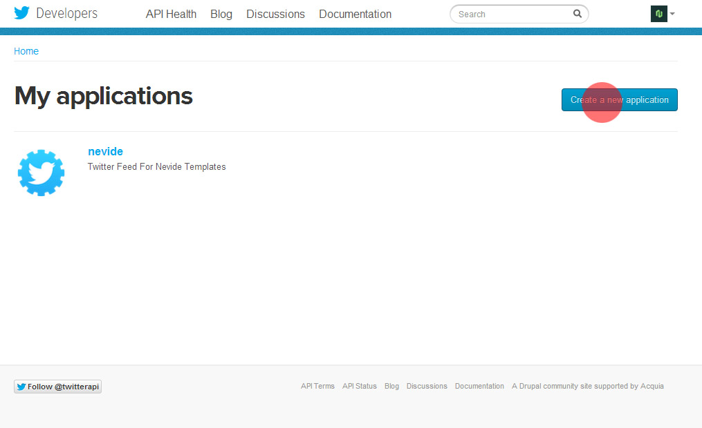
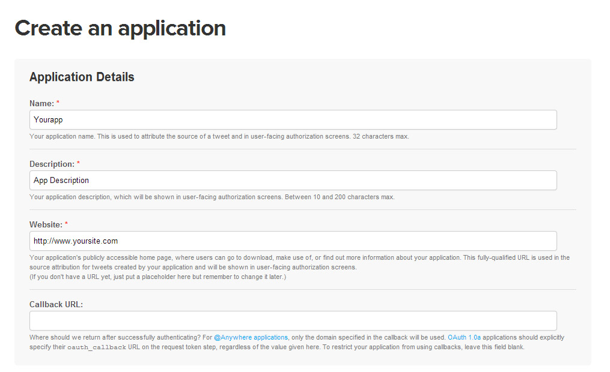
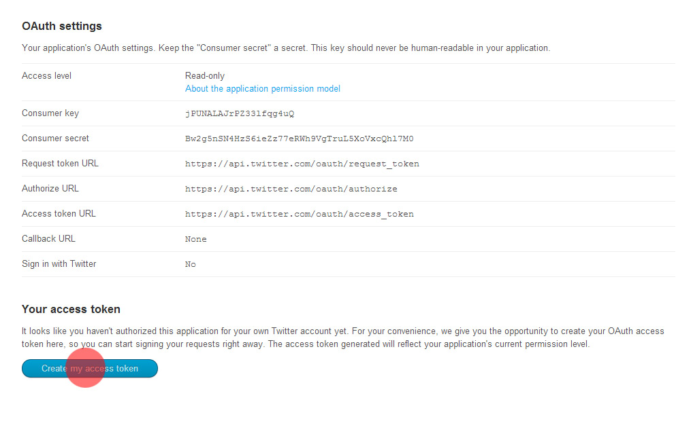
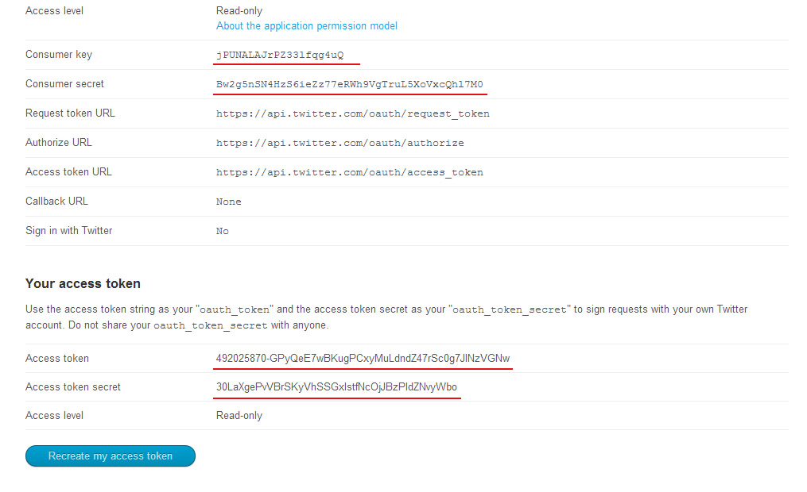
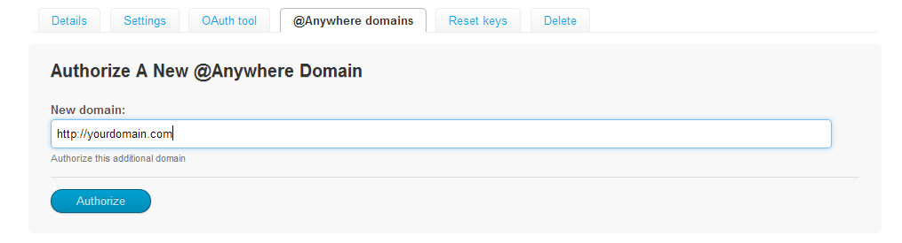

Thank you for your purchase! If you have any questions that you feel should have been in this document,
please log in using the account used to purchase the file and email via my user page contact form here. Thanks so much!
For questions on basic HTML, JavaScript or CSS editing - please give your question a quick Google or visit W3Schools
as theme issues get top priority. You will need some knowledge of HTML/CSS to edit this theme.
Structures
This template is based on Skeleton - a small collection of CSS & JS by Dave Gamache
files that can help you rapidly develop sites that look beautiful at any size, be it a 17" laptop screen or an iPhone.
Skeleton's base grid is a variation of the 16columns 960px grid system. The syntax is simple and it's effective cross browser, but the awesome
part is that it also has the flexibility to go mobile like a champ. You can really easily customize all part of site or build new.
HTML Structure
1. Firstly add 960 container
2. Secondly add a few columns from one to sixteen (that's max columns)
1/2 Column - Content Here
1/2 Column - Content Here
3. Sections Management - The entire site is divided into sections that contain relevant content. Sample code for the first section - SERVICES, below:
Section Content...
CSS Structure
I used five CSS files in this template and two font-styles.
Those files also contains some general styling, such as anchor tag colors, font-sizes, etc. Keep in mind, that these values might be overridden somewhere else in the files below:
layout.css - main css + media query layouts;
base.css - basic global styles like reset, typography etc;
skeleton.css - skeleton responsive grid;
swipebox.css - Responsive Lightbox - style of lightbox contents;
linecons.css - Linecons Icon Font styles;
fwslider.css - Slider settings;
font-awesome.min.css - FontAwesome Icon Font styles;
1. The CSS files are separated into sections using:
class="current" determines which nav item is currently active when you open this website.
It should be home section, when you click on another nav item, then item will get this class and change style.
2. Slides
Single slide code example:
spring stimulates creativity.
Sapientem constituto honestatis. Alia nemore ut pro, his labore delectus ut.
You can change slider contents like logo or texts styles in fwslider.css file.
3. Services - font icons usage.
Every single service is builded by one icon, head caption of service and paragraph. Here is the example code and screenshot how it look.
luctus pulvinar
Maecenas tempus, tellus eget condis mentum rhoncus,
quam opurtunis semper libero, adipiscing sit amet sem.
These icon is just a symbol from free font called: linecons, here
is a whole list of icons that you can use. To change icon edit line below by overwriting "li_tv" to your icon from list.
Full list of linecons you can find in Template Folder: "Linecons Font"
As Well you can add font-awesome icons
There is documentation of font-awesome font icons.
4. Titles
This inscription serves as the transition between sections, you can use it repeatedly. There is example code from screenshot.
Services
We are doing something what
we love to do and we are
doing it absolutely right.
5. Lightbox Popup External Links Management
If you want the content of portfolio item to pop up after clicking on an animated window, then you must add the following class to the code of image.
Code of this specified class (swipebox) is responsible for displaying contents from the specified address in a popup window.
6. About Section
There is example code for one of photos from about section:
Christy - CEO
To look well, use photos 420px width! It's not necessary but look good on mobile ;)
3. If you wannt to use social icons for your teamates, use this list.
4. To change percentage of skill bar edit data-percentage, and caption further.
Web Design
70%
Print design
60%
HTML/CSS
90%
jQuery
80%
7. Portfolio
This portfolio is filtered by jquery isotope script. It's very simple to use, to add/remove filter edit list here:
As you can see, there is a section with background you wannt to scroll with parallax effect. At the top of html file under scripts you can add/remove/edit script options for this sections.
10. Twitter Script
To show your latest tweets in this template you have to make twitter application for developers, it's easy. I try to show you in few Steps.
1. Go to http://dev.twitter.com/ and Sing in to your twitter account. Then click "My applications" from dropdown list here:

2. Create new aplication

Now Fill these fields, accept terms and confirm

3. Now you have to create acces token, click button below

There is almost everything we need to autorize your twitter account on your website

4. Go to @Anywhere Domains, and fill domain where you wannt to install this template and twitter app. Don't close this site.

5. In HTML File, put your name in script - Line 632. Change "YourTwitterName" To your twitter nickname.
twitteruser - put here your twitter account nickname
notweets - how many tweets you wannt o display
consumerkey, consumersecret, accesstoken, accesstokensecret - paste codes from your application website.
That's all, everything should work now.
Remember! PHP Don't work locally, to see changes, you have to put your files to ftp hosting!
Java Scripts
You can see some help info, when click links which are below each regarding script:
jQuery - is a Javascript library that greatly reduces the amount of code that you must write. For more information, please visit http://www.jquery.com/
jQuery Isotope - Portfolio filtering. Refer to the author's documentation for additional notes on how to use it.
jQuery Scroll To - Scrolling Window. Refer to the author's documentation for additional notes on how to use it.
jQuery One Page Nav - Navigation Menuauthor's documentation for additional notes on how to use it.
Sources & Credits
I have permission from the plug-in "fwslider" author to use it in the template.
Images included in preview are for demonstration purposes and should always be replaced with your own work.
Photos are bought from PhotoDune and if you want to buy one just contact me and I'll provide you a link.
The fonts are coming from google webfonts library and myfonts.com, every font is legally licensed.
Once again, thank you so much for purchasing this theme. As I said at the beginning,
I'd be glad to help you if you have any questions relating to this theme. No guarantees, but I'll do my best to assist.
If you have a more general question relating to the themes on ThemeForest, basic HTML/CSS/JavaScript related questions,
you might consider visiting the forums and asking your question in the "Item Discussion" section.